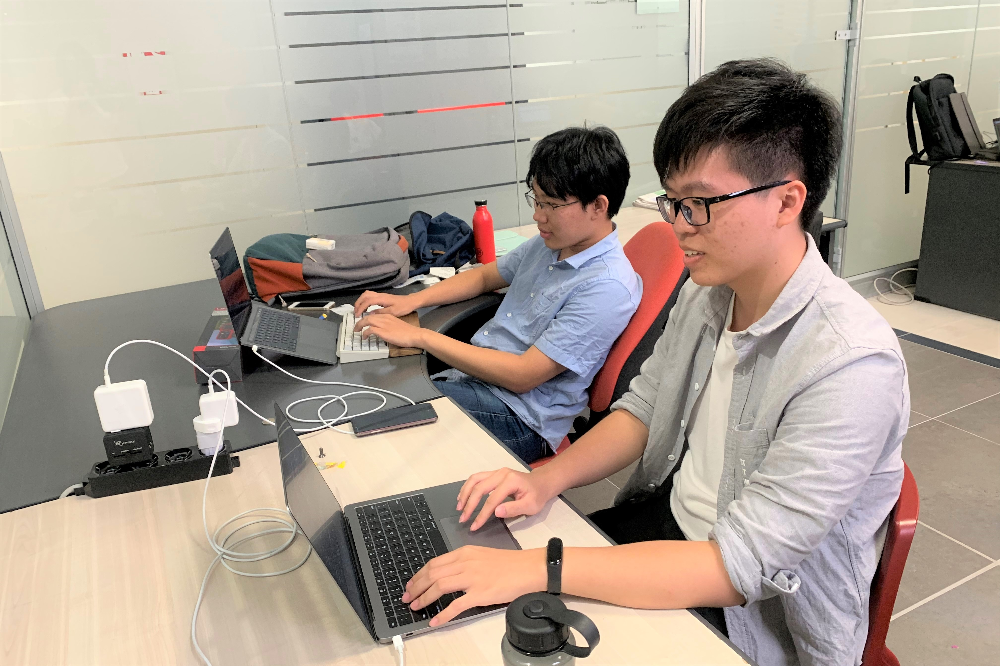
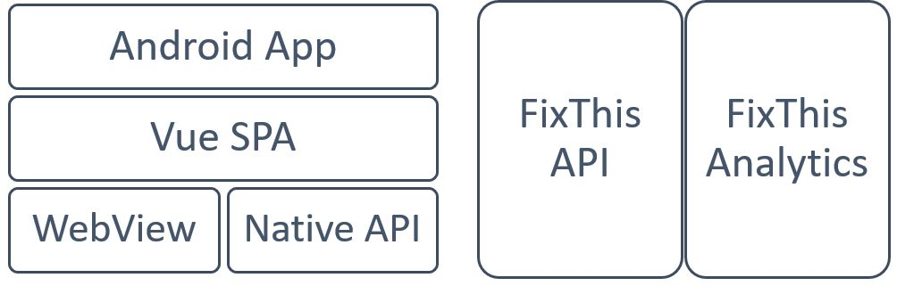
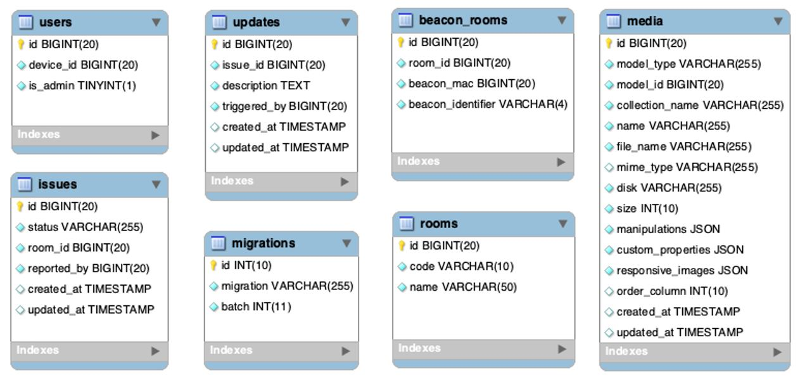

Map the Gap
Adviors
Prof. Giovanni Pau, Prof. Rita Tse
Members
Peter Chan, Stanley Cao
Prof. Giovanni Pau, Prof. Rita Tse
Peter Chan, Stanley Cao
It is usually very inefficient and tedious for facilities damage report and maintenance. Issues are hard to be reported. The student usually has to send an email to the support department or go to the support department to report the issue directly. Also, the issues are hard to track. No real-time report or tracking of the issue is visible by students. Thus, this process is opaque for other stakeholders.
In consideration of the background, we decide to build FixThis -- a painless facilities reporting and tracking system. We will try to make issue submission easy and increase the transparency of the maintenance process. Also, we will visualize the room damage to indicate the priority of the damage. Last but not least, we will try to make user interaction more interactive. To achieve this, we decided this - Swipe up to browse, swipe down to submit.
Besides, we are going to make issue tracking easier by providing a timeline containing all the latest updates of the issue, which is easier for auditing and social supervision.
To achieve our objectives, we decided to use Vue.js and AndroidX artifact to implement the client-side app, and Lumen framework for backend API. We also use Docker for easier deployment. We will discuss more detail of implementation in the following paragraphs.
The target market of Fixthis application is for students and young peoples, the interface design will be designed to be more interesting and user-friendly. Several elements introduced improved the convenience of using Fixthis application. Firstly, the user can swipe down the home page to open the camera. This action can provide a shorter procedure to submit the issues very fast when the user discovers some damage or unusable equipment in the classroom. Secondly, the locating map is zoomable.
Since the screen of mobile devices is smaller than regular desktop computer, the locating map in the mobile screen is not able to provide clear information to the user. Fixthis application provides a scalable map to user, users can zoom in the map with two fingers or using the scale range bar at the bottom of the map. Finally, an icon is provided to describe the complicated meaning. For example, a marker icon represents the current location of the user, users can understand the meaning of the icon directly, and it does not require any language knowledge.
 Figure 2With the idea of database as data container only and should not focusing on the relationships, all the logic and integrity check are all handled by the application.
 Figure 3 EER diagram of database schemaThere are seven tables designed in order to achieve our objectives, noted that the migrations table are generated by the lumen framework for database rollback and other meaningful database management purpose. Media table is also automatically generated by a library called spatie/laravel-medialibrary [3] to associate media file and the model it belongs.
Vue.js itself (literally a webpage) cannot get access directly to Bluetooth sensor (this feature is only supported by Chrome 78+). So, we have a workaround for this problem.
First the android app will start a service. The service will start the beacon scanning job, and then start a HTTP server, exposing at port 10050. Then the data was able to be get by sending HTTP request.
Then the server will respond to the client about the beacons it scanned, including beacon's MAC address, RSSI, identifier, etc. The client will use algorithms to decide which beacon is the nearest and sending requests to the API, getting the corresponding location.
The project was completed; all the requirements were implemented, including camera capture, upload, beacon detection, and locating. Moreover, the project is ahead of schedule; all the works were completed earlier than the planning.
In conclusion, the Fixthis application can provide a shorter process to submit issues of damaged equipment in the classroom. Since the traditional process of submitting repair forms takes much time and spends a lot of human resources, those problems will be solved by using this application; it brings more convenience, increases the speed of submitting problems and saves the user much time.
To the further work, the visualization of damage levels of the different classroom can be provided, which can check the number of damaged devices about a classroom using the application, classrooms with many damaged devices will be more noticeable on the map, such as using red color represents the danger classroom and green color represents the safe classroom.
We can further add more details to the photos submitted by applying AI to the camera. By using object detection, we can add tags on the damaged object, which makes it easier to be located.
Many difficulties were encountered during the developing process. Thanks to our tutors and contributors to various opensource projects. We were able to solve these problems painlessly.
We also learned a lot through this experience, including properly handling resources, how to design an easy-to-use interface, etc. Moreover, we believe this is a valuable experience for all of us.